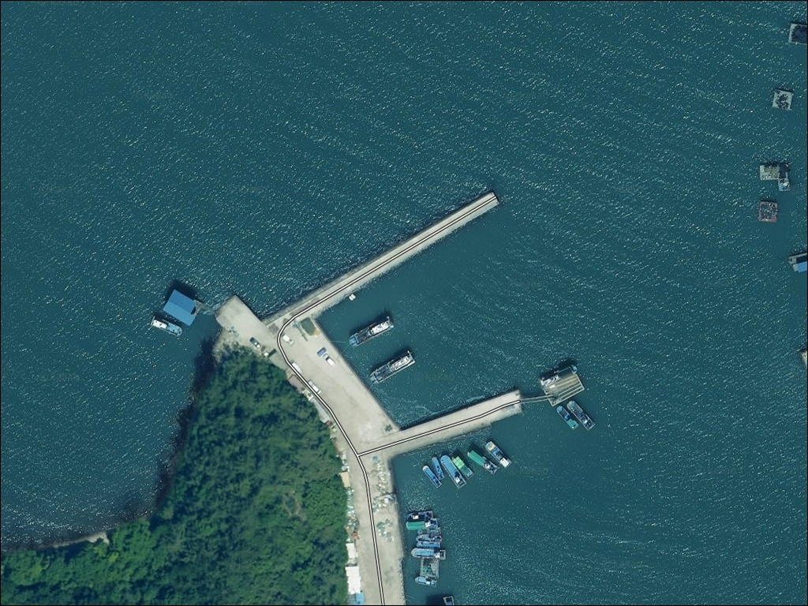
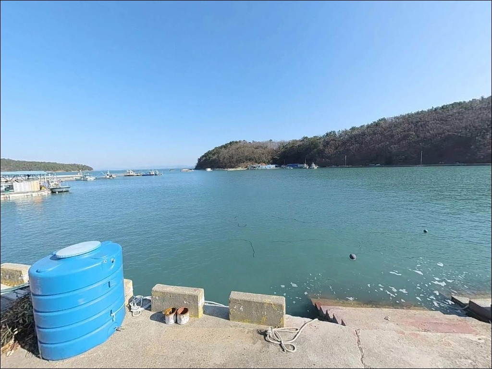
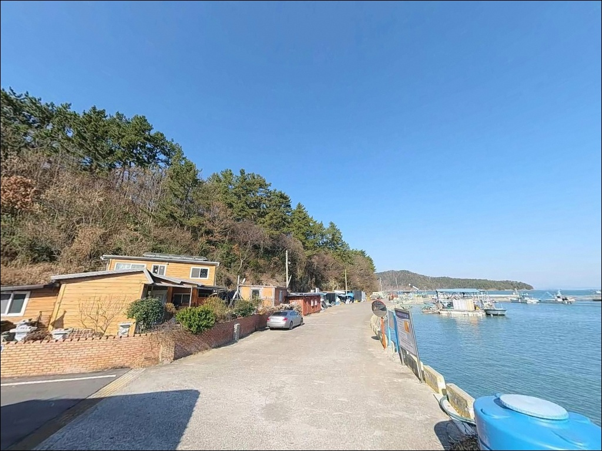
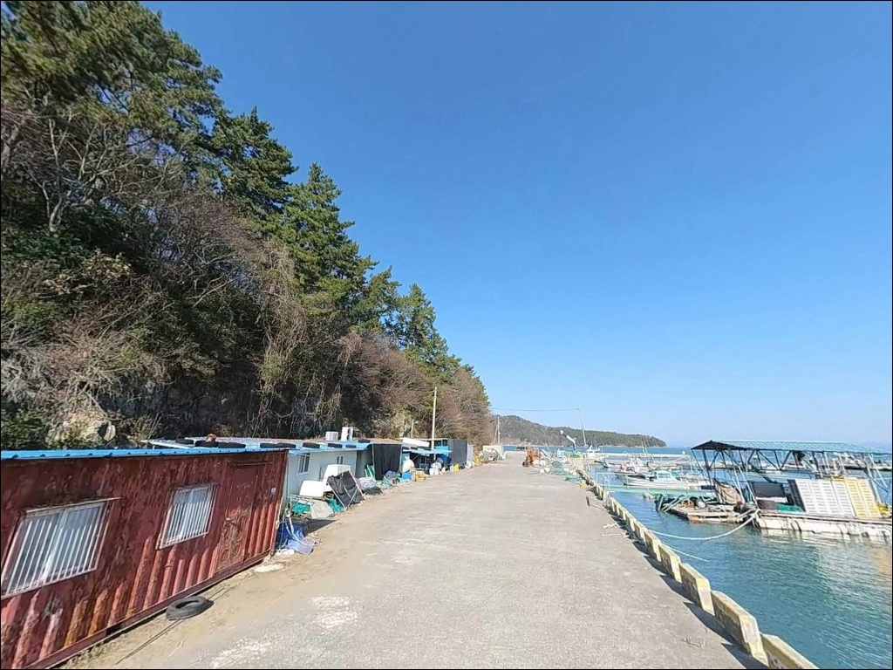
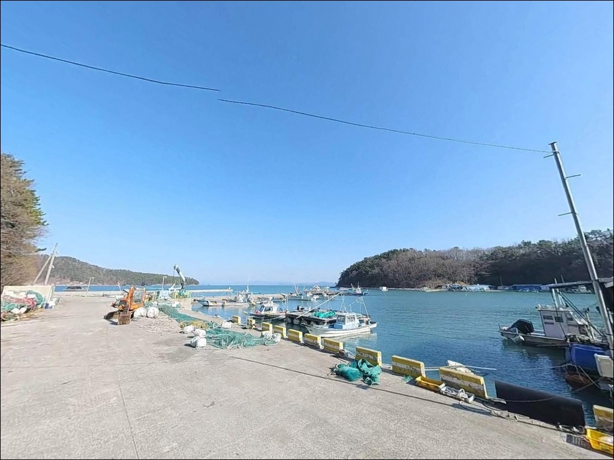
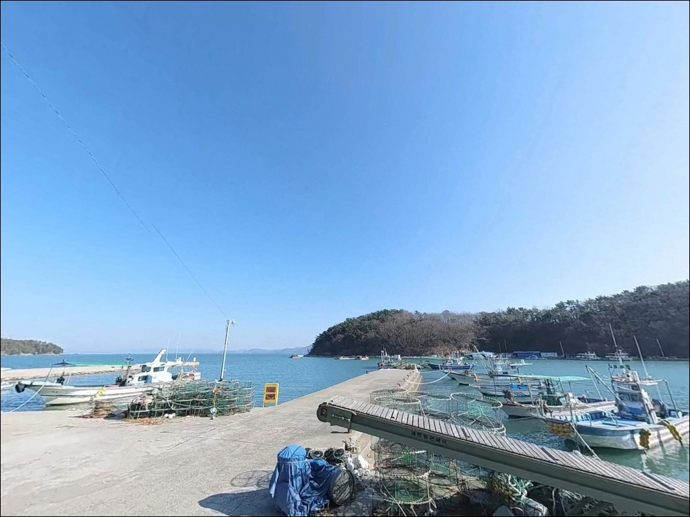
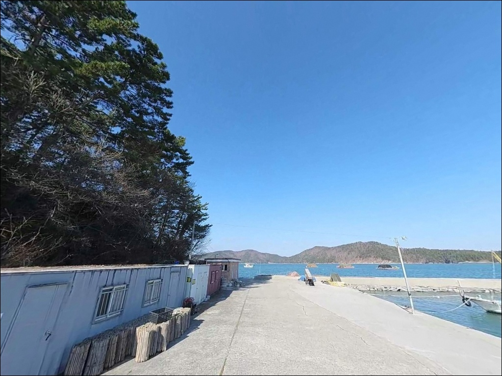
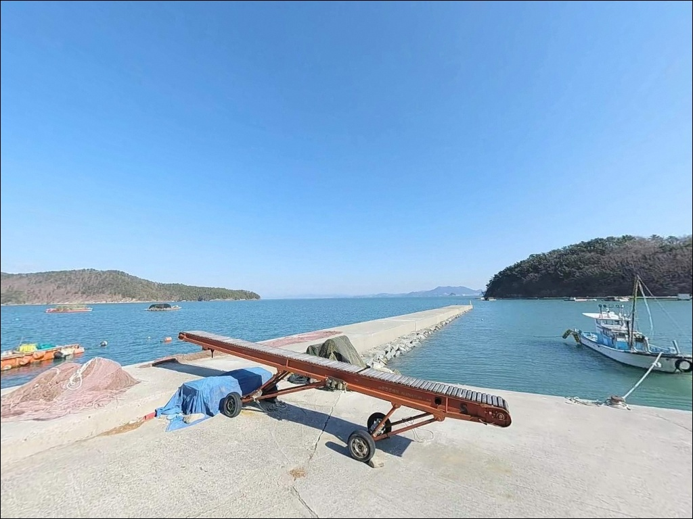
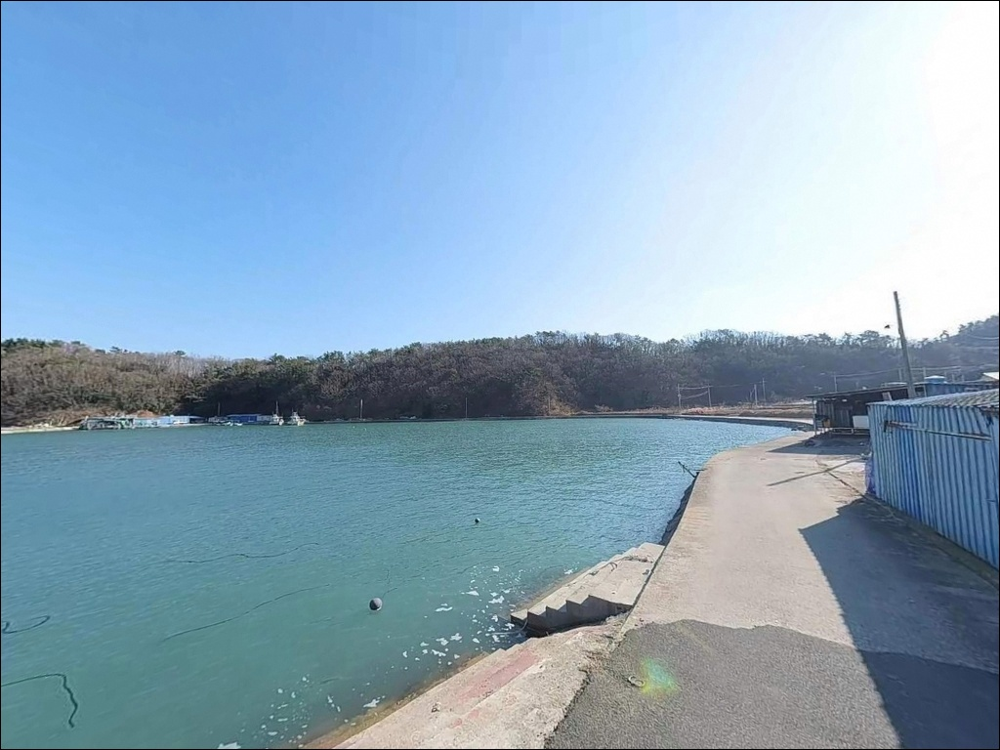

간조에 뻘 드러나는 고흥 우천우두항, 중들물에 맞춘 원투낚시 수심 69m 공략
이 페이지에는 광고(제휴 링크 포함)가 있으며, 광고 링크를 통해 구매하면 운영자가 판매 수익 또는 수수료를 받을 수 있습니다. 포인트 사진: 카카오맵 스카이뷰·로드뷰. 이 페이지의 지도·사진 이미지는 카카오맵의 실제 서비스 이미지와 다를 수 있습니다.


포인트 안내
우천우두항
전남 고흥군 영남면 우천리 436-2
여자만 내만이라는 말만 믿고 물때를 건너뛰면
간조 전후 항 주변 뻘이 드러나
원투낚시 채비가 제자리를 못 찾습니다.
들물이 차오르는 타이밍을 먼저 계산하고 들어와야
방파제 끝단 수심 6~9m 구간이 제 역할을 합니다.
이 글은 우천우두항의
진입 동선, 물량장 구조, 물때 판단 기준,
낚시 스타일별 공략 조건에 집중합니다.
조황 단정이나 특정 어종 보장은
이 글의 범위에 포함되지 않습니다.

1. 진입 동선과 포인트 접근성
우천우두항은 팔영대교 진입로 인근에서
연결되는 왕복 2차선 도로를 통해 접근합니다.
도로 폭이 충분하여
대형 캠핑카나 카라반도 무리 없이 진입할 수 있는
구조입니다.
어항 진입로 막판 구간은 짧은 좁은 도로를
거치지만, 이내 선착장 앞 콘크리트 포장면으로
연결됩니다.
물량장 부지가 광장형으로 넓게 펼쳐져 있어
회차 공간이 여유롭습니다.
방파제 초입부터 끝단 인근까지
차량 이동이 가능하고,
텐트를 치지 않는 조건이라면
다수 차량의 동시 주차도 성립하는 구조입니다.
주차 1순위는 선착장 내 물량장 포장면이며,
어선 관계자 동선과 겹치지 않는 자리를
먼저 잡는 것이 기본 매너입니다.
어선 입출항 시간대는 자리 이동이 필요하므로
어선 정박 현황을 주차 전에 확인합니다.

2. 차박 환경과 야간 체류 여건
우천우두항은 차박 환경이 고흥 권역 소형 어항 중
상위권에 속합니다.
방파제와 선착장을 따라
가로등이 촘촘하게 배치되어 있어
야간 시야 확보가 좋은 편입니다.
팔영대교 조명이 켜지는 야간에는
조망권이 더해져 차박 분위기가 살아납니다.
물량장 부지가 넓어 차박 공간이 충분하고,
주변 민가와 적당한 거리를 유지하는 구조라
프라이버시는 양호한 편입니다.
여자만 내만이지만 서풍·남동풍 계열 바람의
영향을 받는 날이 있으므로,
풍속 확인 후 차량 방향을 조정하는 것이
체류 안정성을 높이는 방법입니다.
항구 입구 인근에 공중화장실이 상시 운영됩니다.
이 점이 우천우두항을 차박 포인트로 선택하는
가장 실질적인 이유입니다.
성수기 해수욕장 이용객과 공간을 일부 공유하므로
7~8월은 주차 여건이 좁아질 수 있어
비수기 방문이 더 쾌적합니다.


3. 주변 편의시설 및 인프라 현황
항구 입구 인근에 공중화장실이 상시 개방되어 있어
장시간 체류에 기본 편의가 갖춰진 포인트입니다.
물량장에 가로등이 설치되어 있어
야간 낚시 시 보조 조명 부담이 적은 편입니다.
다만 야간 방파제 끝단 구간은
조명이 닿지 않는 사각이 생길 수 있어
개인 헤드랜턴은 필수입니다.
영남면 소재지 방향으로 3km 내외 거리에
소형 마트와 식당이 있습니다.
우천리 일대에는 수산물 식당과 횟집이
분포해 있어 낚시 전후 식사 해결이 가능합니다.
대형 마트나 편의점은 없으므로
낚시 소품과 얼음은 출발 전 미리
챙겨두는 편이 현실적입니다.
응급 상황 발생 시 고흥읍이나 도양읍까지
20km 이상을 이동해야 합니다.
비상약품과 충분한 식수는
출발 전 필수 준비 항목입니다.

4. 진입 전 반드시 챙겨야 할 준비사항
우천우두항 방문 전 가장 먼저 확인할 것은
물때입니다.
여자만 내만 특성상 간조 시에는
항 주변 뻘 구간이 드러나고
수심이 낮아지는 구간이 넓어집니다.
바다타임에서 영남면 기준 물때를 확인하고
중들물~만조 전후를 목표로
출발 시각을 맞추는 것이 기본 전략입니다.
남해안 특성상 기상 변화가 빠릅니다.
서풍·남동풍이 강한 날은
내만이라도 파도와 바람이 예상보다
세지는 경우가 있으므로
출발 당일 기상청 해양 기상 예보를
다시 한번 확인하는 것이 포인트 낭비를 막습니다.
방파제 외항 테트라포트는 경사와 해조류로
미끄러운 구간이 있으므로
미끄럼 방지 신발 착용이 필수입니다.
영남면 우천리 일대는
수산자원보호구역으로 지정된 청정 해역입니다.
관련 규정을 사전에 확인하고 출조합니다.
마을 어선이 정박하는 어항이므로
어구와 선박 계류 시설을 가로막는
주차 위치는 피하는 것이 기본 매너입니다.

5. 지형 기반 낚시 여건 분석
우천우두항의 구조는
길게 뻗은 일자형 방파제와
넓은 물량장(선착장)의 조합입니다.
방파제 외항은 테트라포트가 설치된 구간이며,
내항은 석축과 콘크리트 벽면 구조입니다.
방파제 끝단 기준 수심은 6~9m로
조류 소통이 원활하여 회유성 어종의
유입이 잦은 지형입니다.
바닥 지형은 펄과 사질 토양 위주에
간간이 수중여가 발달해 있습니다.
물량장에서 외항 방향으로 장타를 치면
바닥 걸림이 적어 채비 손실이 적은 편입니다.
방파제 끝단 꺾임 자리는
조류 변화가 가장 뚜렷하게 발생하는 구간으로
낚시 자리 선택의 핵심 기준이 됩니다.
팔영대교와 이어지는 여자만 해역은
고흥 동부권에서도 조류 소통이 안정적인 해역입니다.
봄~가을 사이 회유성 어종의 유입이
이 구간에서 꾸준히 이루어집니다.
출조 전 최신 조황은 꼭 검색해보시기 바랍니다.


6. 외항 방파제에서 낚시 조과가 달라지는 조건
우천우두항에서 가장 효율적인 낚시는
원투낚시입니다.
넓은 물량장에서 외항 방향으로 장타를 치면
펄·사질 바닥이 이어지는 구간에서
도다리·보리멸·붕장어를 노릴 수 있습니다.
바닥 걸림이 적어
채비 손실 부담이 적은 공략법입니다.
에깅은 가을 시즌 이 포인트의 주력 낚시 방식입니다.
갑오징어와 주꾸미가 들물 조류를 타고
외항 방향으로 유입되는 패턴이
영남면 여자만 연안 해역에서 반복됩니다.
방파제 끝단과 외항 측면을 따라
중들물 타이밍에 에기를 천천히 끌어오는 방식이
기본 공략법입니다.
야간 볼락 루어는 선착장 가로등 주변이
핵심 구간입니다.
빛이 닿는 경계선 가장자리로
소형 지그헤드 채비를 흘려보내는 방식이
이 항구 구조에 잘 맞습니다.
찌낚시는 방파제 끝단 꺾임 자리에서
반유동 채비로 감성돔과 숭어를 노리는 방식이
성립합니다.
에깅이란 갑오징어·무늬오징어를 대상으로

7. 대안 포인트와 플랜 B 동선
우천우두항 물량장이 혼잡하거나
조황이 기대에 못 미칠 경우
첫 번째 대안은
영남방파제입니다.
우천우두항 인근에 위치하며
규모가 다소 작고 조용한 분위기라
단독 낚시를 원한다면 더 어울릴 수 있습니다.
영남면 남쪽으로 5~8km 이동하면
발포항 방파제가 있습니다.
바다타임 낚시 포인트로 등록된 검증 포인트로
외항 길이가 더 길고 수심 확보 구간이 넓어
원투와 에깅 포인트 선택 폭이 더 넓은 대안입니다.
차박 대안으로는
남열해돋이해수욕장 캠핑장이 있습니다.
고흥군 영남면 남열리 소재 유료 시설로
취사와 캠핑 환경이 갖춰져 있습니다.
인근 갯바위도 원투 포인트로 활용되므로
낚시와 캠핑을 묶고 싶다면
이 동선을 플랜 B 기점으로 잡아도 좋습니다.

팔영대교 야경 옆에서
원투 대를 드리우는 포인트
원투낚시나 가을 갑오징어 에깅을
즐기는 낚시인이라면
우천우두항의 방파제 구조와 수심 조건은
잘 맞는 지형입니다.
물량장이 넓고 가로등과 화장실이
갖춰져 있어 처음 찾아가는 포인트치고
진입 부담이 적은 편입니다.
다만 여자만 내만 특성상
물때를 잘못 맞추면
간조에 뻘이 드러나 채비 운용 자체가
어려워집니다.
들물 타이밍, 기상 확인, 수산자원보호구역
규정 사전 확인,
이 세 가지가 방문 전 필수 점검 항목입니다.
팔영대교 야경을 바라보며
물량장 한켠에 차를 세우고
원투 대와 에깅 로드를 나란히 펼쳐두는 밤이라면,
고흥 동부권 차박 낚시 포인트로
기억에 남을 만한 출조가 됩니다.